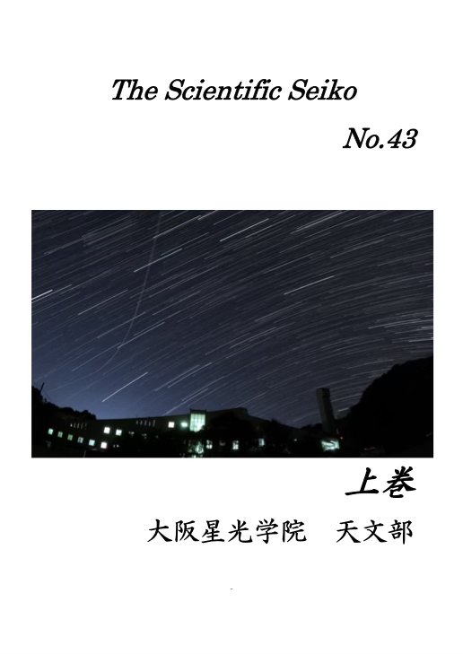
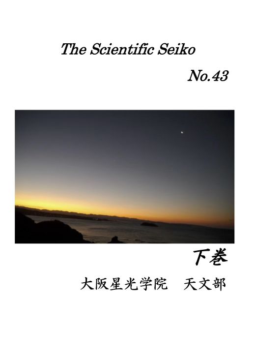

グッズ
部誌
大阪星光学院天文部では，毎年SFの時に，部誌を作っております．今年の最新号に加えて，過去数年分をこちらのページで公開中です！ぜひご覧ください．
個人情報保護のため，名前を隠すなどの変更を行なっております．SF当日に配布しました冊子と一部異なる場合がありますので，ご了承ください．
Q&Aページに，部誌の内容などに関する質問フォームと，今年度の企画に関するアンケートがあります．画面上部メニューバーからアクセスしてご利用ください．
The Scientific Seiko 2024

本編 No.43 上巻
本編 No.43 上巻

本編 No.43 下巻
本編 No.43 下巻
※2024年の部誌では，活動報告を本編および"For Beginners"に移動しました．
※印刷上の都合で，SF当日に冊子としてお配りしたものとWeb版で，巻数が異なっています．内容は同じですので，ご安心ください．